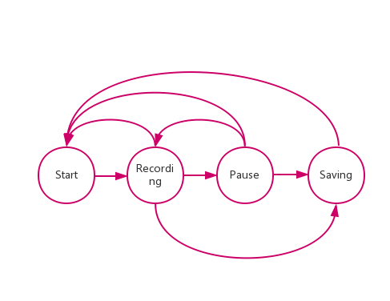

This is a mobile application which can record voice.
User can perform following tasks:
This is no fixed routine when people record. So I use state stransition diagram to analyse the transistion between different modes
A simple interactive prottotype was created